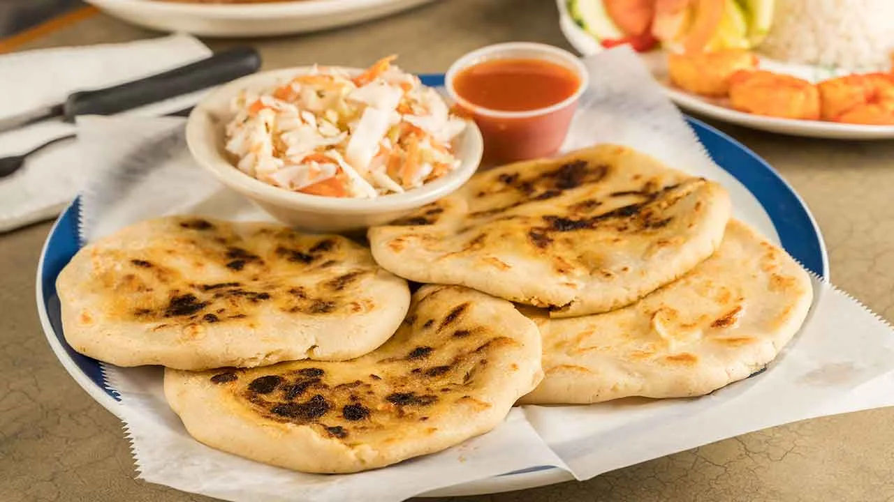
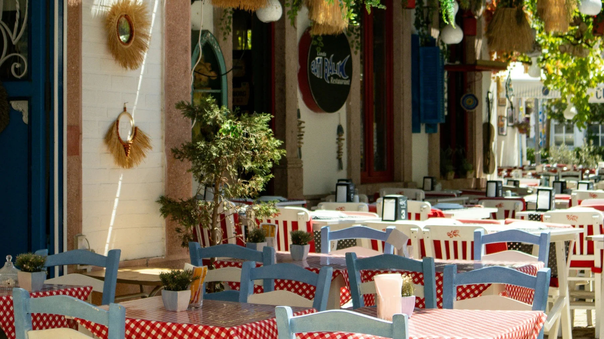
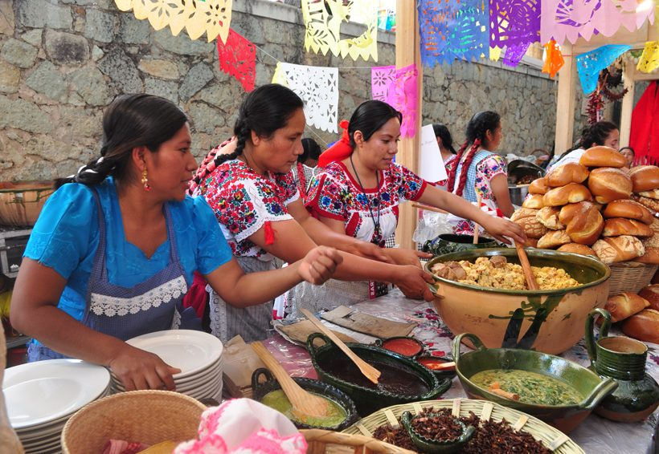
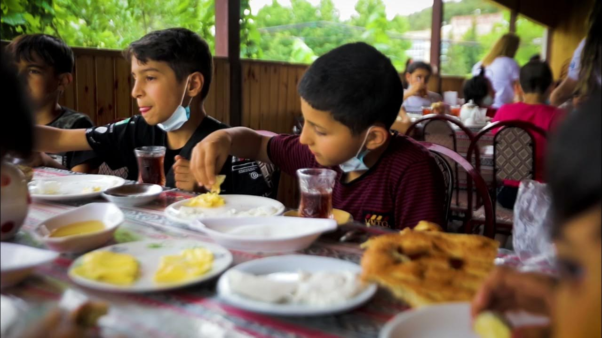

Sabor Salvadoreño
Fundado en 2015, Sabor Salvadoreño nació de un sueño de llevar los auténticos sabores de El Salvador a nuestra comunidad. Nuestro restaurante es más que un lugar para comer: es un puente cultural que conecta a las personas con las ricas tradiciones culinarias de Centroamérica.
Cada plato que servimos se prepara con amor, usando recetas tradicionales que han sido transmitidas de generación en generación. Desde nuestras pupusas hechas a mano hasta nuestro aromático café, nos aseguramos de que cada bocado te transporte al corazón de El Salvador.
Obtenemos nuestros ingredientes de proveedores locales que comparten nuestro compromiso con la calidad y la autenticidad. Nuestra masa de maíz se hace fresca todos los días, nuestro curtido se fermenta a la perfección y nuestras salsas se elaboran con el equilibrio perfecto de sabores.
¿Por qué comer con nosotros?

Conveniente y Confiable
Ya sea comás en nuestro local o si pedís para llevar, estas 100% garantizado de disfrutar tu comida y pasarla al maximo.
Muchas Opciones
Desde comida saludable, yuca frita, pupusas, atol de elote, atol de ripio, sopa de gallina india hasta platillos tradicionales como canoas o empanadas.
100% Salvadoreño
Nuestros platillos son preparados por manos totalmente salvadoreñas llenas de amor y la magia que nos define.
Galería del restaurante
Toma un vistazo a nuestros servicios unicos e inigualables.

Lugares Mágicos

Realizamos Catterings

Disfruta en Familia
Feedback del cliente
Las pupusas me transportaron a mi infancia en San Salvador. El curtido y la salsa tienen ese toque casero que no encontrás en otro lado. Mi restaurante favorito.
María Rodríguez
Cliente frecuente
El combo familiar fue un éxito total. Yuca crujiente, empanadas deliciosas y la comida llegó calientita a domicilio. Totalmente recomendado.
Jorge López
Amante de la gastronomía
El ambiente es súper acogedor. Las canoas de plátano y el atol de elote son espectaculares. Se nota el cariño en cada platillo. Ya es mi rutina semanal.
Andrea Castillo
Bloguera de comida
Descubrí este lugar por recomendación y no me arrepiento. Los tamales de gallina y las enchiladas son increíbles. El servicio es rápido y el personal muy amable.
Daniel Flores
Nuevo cliente
Chefs y Equipo

Carlos Venavidez
Founder & CEO

Emilia Clark
Jefe principal
Rowena Young
Community Manager y control de calidad